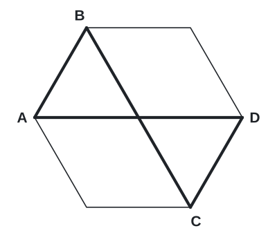

בכמה מספרים תלת־ספרתיים מכפלת שלוש הספרות שווה ל־120?
הצגת הפתרון
התשובה הסופית3תשובה (3)12
דרך הפתרון והסבר
נפרק את 120 לגורמים: 120 = 2³ · 3 · 5.נחפש שלוש ספרות (1 עד 9) שמכפלתן 120:5 חייב להיות אחת הספרות (אין ספרה אחרת שמתחלקת ב־5).שתי הספרות האחרות מכפלתן 24: 3 · 8 או 4 · 6 (2 · 12 ו־1 · 24 לא ספרות).השלשות: {3, 5, 8} ו־{4, 5, 6}.בכל שלשה שלוש ספרות שונות, ולכן 3! = 6 סידורים:6 + 6 = 12 מספרים.
מוקשים נפוצים
לא לשכוח אף פירוק: גם 3 · 5 · 8 וגם 4 · 5 · 6.
נבדקהפתרון תואם את מפתח התשובות של הספר.
שאלה 2
נתון: 3 + xx − 3 < 0 , (x ≠ 3)
מהו תחום הערכים שמקיים את אי־השוויון הנתון בשאלה?
הצגת הפתרון
התשובה הסופית2תשובה (2)−3 < x < 3
דרך הפתרון והסבר
שבר שלילי – מונה ומכנה בסימנים הפוכים.מונה חיובי ומכנה שלילי:3 + x > 0 ⇒ x > −3, ו־x − 3 < 0 ⇒ x < 3. יחד: −3 < x < 3.מונה שלילי ומכנה חיובי:x < −3 וגם x > 3 – בלתי אפשרי.התחום: −3 < x < 3.
מוקשים נפוצים
לבדוק את שני המקרים – אחד מהם ריק.
נבדקהפתרון תואם את מפתח התשובות של הספר.
שאלה 3
לכל מספר טבעי a הוגדרה הפעולה $(a) כך: $(a) = 1 + 2 + 3 + 4 + … + a. נתון: n מספר טבעי הגדול מ־1.
מה מהבאים נכון בהכרח?
הצגת הפתרון
התשובה הסופית3תשובה (3)$(n) − 1 > $(n − 1)
דרך הפתרון והסבר
$(n) הוא סכום המספרים מ־1 עד n, ו־$(n − 1) הוא הסכום עד n − 1.$(n) − $(n − 1) = n (המחובר האחרון).לכן:$(n) − 1 − $(n − 1) = n − 1n > 1, ולכן n − 1 > 0:$(n) − 1 > $(n − 1)
מוקשים נפוצים
ההפרש בין שני סכומים עוקבים הוא המחובר האחרון, n.
נבדקהפתרון תואם את מפתח התשובות של הספר.
שאלה 4
בסרטוט שלפניכם מעגל קטן ש־AB הוא קוטרו ו־A היא נקודת ההשקה שלו למעגל הגדול שמרכזו O. נתון: 2BO = AO.
מה היחס בין שטח המעגל הקטן לשטח האפור?
הצגת הפתרון
התשובה הסופית4תשובה (4)9:7
דרך הפתרון והסבר
A על המעגל הגדול, ו־O מרכזו, ולכן AO = R.נתון 2BO = AO:BO = R2O על הקוטר AB של המעגל הקטן:AB = AO + OB = R + R2 = 3R2, ולכן רדיוס הקטן r = 3R4.שטחים:המעגל הקטן: π(3R4)² = 916πR²האפור (הגדול פחות הקטן): πR² − 916πR² = 716πR²היחס:916 : 716 = 9 : 7
מוקשים נפוצים
AB הוא קוטר המעגל הקטן – הרדיוס הוא חצי ממנו.
נבדקהפתרון תואם את מפתח התשובות של הספר.
שאלה 5
מדפסת מדפיסה 6 עמודים בחצי שעה. אחת לשעתיים כורך מאגד 30 עמודים לחוברת אחת. בהנחה ו־3 מדפסות ו־2 כורכים החלו לעבוד ב־8:00 וכי יום העבודה מסתיים בשעה 20:00, כמה עמודים יוותרו ללא כריכה?
הצגת הפתרון
התשובה הסופית3תשובה (3)72
דרך הפתרון והסבר
יום העבודה 8:00 עד 20:00 – 12 שעות.הדפסה:מדפסת: 6 עמודים בחצי שעה = 12 עמודים בשעה.3 מדפסות ב־12 שעות: 3 · 12 · 12 = 432 עמודים.כריכה:כורך: 30 עמודים כל שעתיים – 6 פעמים ב־12 שעות: 180 עמודים.2 כורכים: 360 עמודים.לא נכרכו:432 − 360 = 72 עמודים.
מוקשים נפוצים
לחשב את ההדפסה ואת הכריכה בנפרד, לאותו פרק זמן.
נבדקהפתרון תואם את מפתח התשובות של הספר.
שאלה 6
a ו־b הם מספרים שלמים בין 1 ל־9. נתון: a · b · (a + b − 10) = 70
|a − b| = ?
הצגת הפתרון
התשובה הסופית2תשובה (2)2
דרך הפתרון והסבר
70 = 2 · 5 · 7, וכל הגורמים חיוביים (המכפלה חיובית ו־a, b חיוביים), ולכן a + b − 10 ≥ 1.נחפש a, b ו־k = a + b − 10 שמכפלתם 70:k = 2: ab = 35 ⇐ {5, 7}, ואכן 5 + 7 − 10 = 2 ✓k = 1: ab = 70 – אין ספרות כאלה ✗k = 5: ab = 14 ⇐ {2, 7}, אבל 2 + 7 − 10 = −1 ✗k = 7: ab = 10 ⇐ {2, 5}, אבל 2 + 5 − 10 = −3 ✗לכן a ו־b הם 5 ו־7:|a − b| = 2
מוקשים נפוצים
לבדוק שהגורם השלישי באמת שווה ל־a + b − 10.
נבדקהפתרון תואם את מפתח התשובות של הספר.
שאלה 7
לצוות חיילים העומדים לפני ניווט לילה רגלי יש מפה בקנה מידה של 1:100,000. מפקד הצוות סימן לחיילים מסלול שאורכו על המפה הוא 20 ס"מ.
אם החיילים עברו את המסלול ב־____ אזי מהירותם היא ____ קמ"ש.
הצגת הפתרון
התשובה הסופית4תשובה (4)רבע שעה ; 80 קמ"ש
דרך הפתרון והסבר
קנה מידה 1:100,000 – כל ס"מ במפה הוא 100,000 ס"מ = 1 ק"מ במציאות.20 ס"מ במפה = 20 ק"מ.נבדוק כל זוג:חצי שעה: 20 ÷ 0.5 = 40 קמ"ש (לא 20 ולא 10) ✗רבע שעה: 20 ÷ 0.25 = 80 קמ"ש ✓ (לא 40) – תשובה (4).
מוקשים נפוצים
100,000 ס"מ הם 1 ק"מ – לא 100 מטר.
נבדקהפתרון תואם את מפתח התשובות של הספר.
שאלה 8
נתון: 0 < a < 1.x = 1a ; y = 1a⁻² ; z = a⁻⁴
מה מהבאים נכון בהכרח?
הצגת הפתרון
התשובה הסופית4תשובה (4)y < x < z
דרך הפתרון והסבר
0 < a < 1. נפשט כל ביטוי:x = 1a – גדול מ־1.y = 1a−2 = a² – בין 0 ל־1.z = a−4 = 1a⁴ – גדול מ־1a, כי a⁴ < a.לכן:y < 1 < x < z ⇒y < x < zדוגמה: a = 12: x = 2, y = 14, z = 16 ✓
מוקשים נפוצים
1a−2 = a² – מעריך שלילי במכנה עולה למונה.
נבדקהפתרון תואם את מפתח התשובות של הספר.
שאלה 9

בסרטוט שלפניכם משושה משוכלל. עידו נוסע על אופניו במהירות קבועה לאורך המסלול המודגש.
מה הסיכוי שאם נעצור את עידו בנקודת זמן כלשהי הוא יהיה במהלכו של קטע BC?
הצגת הפתרון
התשובה הסופית3תשובה (3)13
דרך הפתרון והסבר
במשושה משוכלל שצלעו s, האלכסון הראשי (שעובר במרכז) שווה 2s.המסלול המודגש:AB – צלע: sBC – אלכסון ראשי: 2sCD – צלע: sDA – אלכסון ראשי: 2sסך הכול: 6sהמהירות קבועה, ולכן הסיכוי להיות בקטע BC הוא החלק שלו מכל המסלול:2s6s = 13
מוקשים נפוצים
האלכסון הראשי במשושה הוא 2s (שתי צלעות), לא s√3.
נבדקהפתרון תואם את מפתח התשובות של הספר.
שאלה 10
נתון: x = √3·y4, x מספר טבעי המתחלק ב־6 ללא שארית.
איזה מהבאים יכול להיות ערכו של y²?
הצגת הפתרון
התשובה הסופית3תשובה (3)192
דרך הפתרון והסבר
x = √3 · y4, ו־x מספר טבעי שמתחלק ב־6.נבדוק כל ערך של y² (y חיובי):y² = 36 ⇒ y = 6 ⇒ x = 6√34 – לא שלם ✗y² = 144 ⇒ y = 12 ⇒ x = 3√3 – לא שלם ✗y² =192 ⇒y =√192 =8√3 ⇒x =√3 · 8√34 =244 =6 ✓ (מתחלק ב־6)y² = 256 ⇒ y = 16 ⇒ x = 4√3 – לא שלם ✗התשובה: 192.
מוקשים נפוצים
x טבעי רק כש־y כולל √3 שמתבטל – כלומר y² הוא 3 כפול ריבוע.